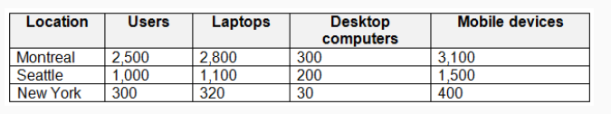
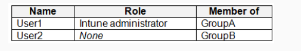
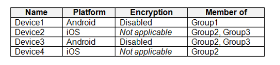
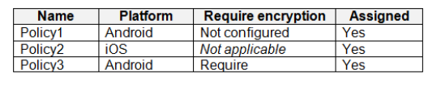
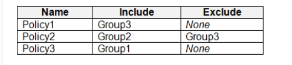
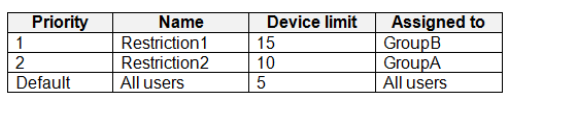

66- Estudo de caso -
Visão geral -
A Contoso, Ltd. é uma empresa de consultoria com sede em Montreal e duas filiais em Seattle
e Nova York.
A Contoso tem os usuários e computadores mostrados na tabela a seguir.

A empresa possui departamentos de TI, recursos humanos (RH), jurídico (LEG), marketing (MKG) e finanças (FIN).
A Contoso adquiriu recentemente uma assinatura do Microsoft 365.
A empresa está abrindo uma nova filial em Phoenix. A maioria dos usuários do escritório de Phoenix trabalhará
em casa.
Ambiente Existente -
A rede contém um domínio do Active Directory denominado contoso.com que é sincronizado com o Azure AD.
Todos os servidores membros executam o Windows Server 2016. Todos os laptops e desktops executam o Windows
10 Enterprise.
Os computadores são gerenciados usando o Microsoft Configuration Manager. Os dispositivos móveis são gerenciados
usando o Microsoft Intune.
A convenção de nomenclatura para os computadores é a sigla do departamento, seguida por um hífen e depois
quatro números, por exemplo FIN-6785. Todos os computadores estão associados ao domínio local do Active
Directory.
Cada departamento tem uma unidade organizacional (OU) que contém uma OU filha chamada Computadores. Cada
conta de computador está na UO Computadores de seu respectivo departamento.
Configuração do Intune
O domínio possui os usuários mostrados na tabela a seguir.

User2 é um DEM (gerenciador de registro de dispositivos) no Intune.
Os dispositivos inscritos no Intune são mostrados na tabela a seguir.

As políticas de conformidade do dispositivo no Intune são configuradas conforme mostrado na tabela a seguir.

As políticas de conformidade do dispositivo têm as atribuições mostradas na tabela a seguir.

As restrições de limite de dispositivo no Intune são configuradas conforme mostrado na tabela a seguir.

Requisitos -
Mudanças planejadas -
A Contoso planeja implementar as seguintes alterações:
• Fornecer novos computadores aos usuários do escritório Phoenix. Os novos computadores possuem o Windows
10 Pro pré-instalado e já foram adquiridos.
• Implementar o co-gerenciamento dos computadores.
Requerimentos técnicos -
A Contoso deve atender aos seguintes requisitos técnicos:
• Certifique-se de que os usuários de um grupo chamado Grupo4 só possam acessar o Microsoft Exchange Online a partir de
dispositivos inscritos no Intune.
• Implante o Windows 10 Enterprise nos computadores dos usuários do escritório Phoenix usando o Windows Autopilot.
• Crie um pacote de provisionamento para novos computadores no departamento de RH.
• Impedir que dispositivos iOS enviem dados de diagnóstico e telemetria de uso.
• Use o princípio do menor privilégio sempre que possível.
• Permitir que os usuários do departamento MKG usem o App1.
• Co-gestão piloto para o departamento de TI.
Você precisa atender aos requisitos técnicos dos dispositivos iOS.
Qual objeto você deve criar no Intune?